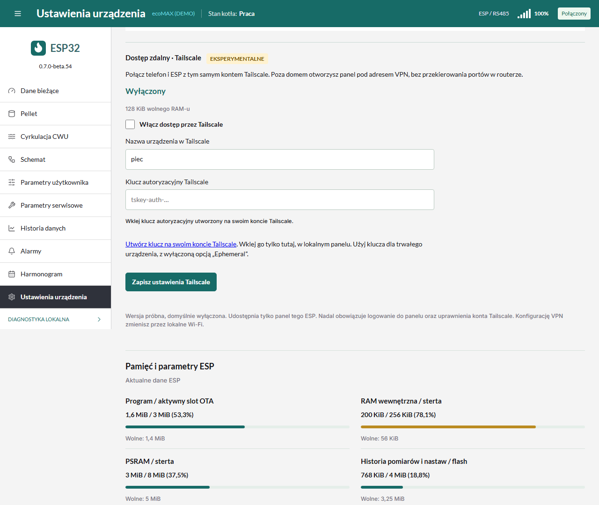

Dostęp zdalny Tailscale na tym samym ESP
Funkcja eksperymentalna od 0.7.0-beta.54, domyślnie wyłączona. To integracja społecznościowej biblioteki MicroLink, a nie oficjalny klient Tailscale. W beta.54 potwierdzono załadowanie całego panelu i bieżących temperatur z telefonu przez sieć komórkową i Tailscale. Pozostają dłuższe testy stabilności razem z panelem, RS485, archiwum i gniazdkiem Tapo.
ESP z panelem oraz telefon dołączają do prywatnej sieci Tailscale użytkownika. Nie jest potrzebny drugi komputer ani przekierowanie portów routera. Oba urządzenia potrzebują dostępu do Internetu. Gdy połączenie bezpośrednie jest niemożliwe, biblioteka może korzystać z szyfrowanego przekaźnika DERP. Usługę koordynacji i przekaźniki zapewnia Tailscale; autor panelu nie prowadzi własnego serwera i nie otrzymuje klucza użytkownika.
Pierwsze połączenie
- Zainstaluj oficjalną aplikację Tailscale na telefonie i zaloguj się na swoje konto. Włącz połączenie VPN w aplikacji.
- Na tym samym koncie otwórz klucze Tailscale i utwórz auth key. Wyłącz opcję Ephemeral, ponieważ ESP ma pozostać zapisanym urządzeniem. Przy włączonym zatwierdzaniu urządzeń trzeba też zaakceptować ESP w konsoli Tailscale. Nie używaj hasła do konta ani API key.
- Połącz się z domowym Wi-Fi i otwórz lokalny panel
http://piec.local/. Wybierz Ustawienia urządzenia → Dostęp zdalny · Tailscale. - Włącz opcję, wpisz nazwę urządzenia (np.
piec) i wklej klucz. Naciśnij Zapisz ustawienia Tailscale. Klucz podawaj wyłącznie w lokalnym panelu, nie w zgłoszeniu na GitHubie, zdjęciu ani wiadomości do autora. - Poczekaj na status Połączono z Tailscale i adres
http://100.x.x.x/. Nadal obowiązuje login i hasło panelu ESP. Własne hasło panelu możesz ustawić w jego ustawieniach dostępu. - Na telefonie wyłącz Wi-Fi, pozostaw transmisję komórkową i Tailscale. Otwórz pokazany adres w przeglądarce. Jest to właściwy test dostępu spoza domu. Sam wpis ESP na liście urządzeń Tailscale nie potwierdza działania panelu.
Ta wersja używa klucza, a nie parowania kodem QR. piec.local pozostaje adresem
sieci lokalnej; do zdalnego testu użyj pokazanego adresu 100.x.x.x.

Co jest udostępnione
- Tylko panel HTTP tego ESP, port TCP 80, w szyfrowanym tunelu WireGuard.
- Logowanie panelu, ochrona poleceń i uprawnienia sieci Tailscale nadal obowiązują.
- Inne adresy domowe, most TCP RS485, ICMP/ping, IPv6 i pozostałe porty nie są udostępnione przez tę integrację. ESP nie jest routerem podsieci ani exit node.
- Sama konfiguracja Tailscale jest dostępna wyłącznie przez lokalne połączenie. Wyłączenie opcji zatrzymuje VPN; zapisane klucze zostają w ESP na kolejny raz.
- Puste pole klucza przy kolejnym zapisie zachowuje poprzedni klucz. API nie zwraca jego wartości. Konfiguracja i tożsamość urządzenia są zapisywane w NVS; fabryczne wymazanie całej pamięci je usuwa. NVS w tym firmware nie jest szyfrowane.
Ograniczenia i pamięć
Wymagane: ESP32-S3, 16 MB flash, 8 MB PSRAM, zgodne z obsługiwanym Waveshare. Biblioteka jest ustawiona na maksymalnie 16 peerów. Katalog ma limit 16 znanych peerów, a komunikaty serwera i zasady dostępu są ograniczone rozmiarem. Duża sieć firmowa lub nieobsługiwana reguła mogą uniemożliwić połączenie. Nie usuwaj swoich reguł dostępu tylko po to, aby uruchomić wersję próbną.
Start wymaga co najmniej 112 KiB wolnego wewnętrznego RAM-u, bloku 16 KiB i 2 MiB PSRAM, już po uruchomieniu zadania zarządzającego. Przy spadku zapasu poniżej 48 KiB RAM-u lub 512 KiB PSRAM przez trzy kolejne odczyty VPN jest zatrzymywany. Po awarii/watchdogu automatyczny start VPN jest wstrzymany; można go ponownie uruchomić zapisując konfigurację lokalnie. Te progi są zabezpieczeniem próby, a nie gwarancją stabilności.
Od beta.54 bufory sieci Wi-Fi i lwIP preferują PSRAM. Stosy zadań i bufory wymagające DMA pozostają w pamięci wewnętrznej. Wyniki krótkich prób na urządzeniu i testy pozostające do wykonania opisuje raport testów.
Przy nieudanym połączeniu przez trzy minuty próba jest zatrzymywana. Po sprawdzeniu Internetu, klucza, zatwierdzenia urządzenia i reguł dostępu zapisz ustawienia ponownie. Nie potrzeba do tego restartować kotła. Stan „Oczekiwanie na synchronizację czasu” wymaga dostępu do serwera NTP; poprawny czas jest konieczny do weryfikacji certyfikatów HTTPS.
Jeżeli po aktualizacji panel lokalny nie działa, przywróć poprzedni obraz OTA przez dostępną diagnostykę lub instalator USB zgodnie z instrukcją aktualizacji. Do pierwszego testu przygotuj poprzedni plik i miej dostęp do urządzenia.
Źródła: ESP32 Tailnet Gateway,
MicroLink. Wersja źródeł i lokalne zmiany:
components/microlink/UPSTREAM.json i components/microlink/ECOMAX_PATCHES.md.